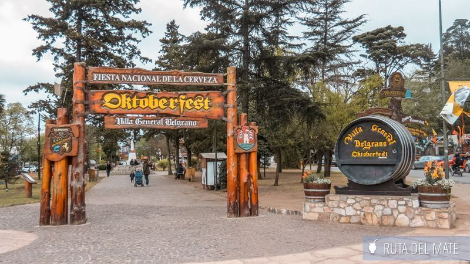

Misiones-Cataratas del Iguazu

En Argentina podemos estar orgullosos de tener una de las 7 maravillas del mundo natural. Ver el fenómeno de las Cataratas del Iguazú en vivo y en directo es algo que todo argentino debería vivir al menos una vez. Este impresionante conjunto de más de 250 cascadas es un espectáculo sin igual.
Ubicadas en el Parque Nacional Iguazú, este Patrimonio de la Humanidad de la UNESCO ofrece algo más que solo un paisaje impresionante. La potencia del agua que cae desde alturas de hasta 195 metros, crea un estruendo ensordecedor que resuena a lo largo de la selva misionera.
Cordoba-Villa General Belgrano

Villa General Belgrano está situada en el centro de la República Argentina, en un lugar privilegiado del Valle de Calamuchita, Provincia de Córdoba.
Rodeada de montañas, las Sierras Chicas al este y las Sierras Grandes o de Los Comechingones al oeste, esta pintoresca localidad se encuentra a 700 msnm, entre los dos grandes lagos del Valle de Calamuchita.
Santa Cruz-Calafate

El Calafate se encuentra a 316 km de Río Gallegos, y toma su nombre del pequeño arbusto Calafate, típico del sur de la Patagonia. Este fruto, es una baya muy apetecible en la preparación de dulces. Según la tradición, quien come calafate alguna vez regresará por más. Pero la realidad indica que quien conoce El Calafate no quiere irse jamás.